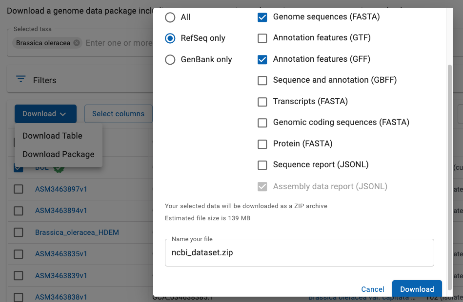

|
NCBI supplies FASTA formatted files for genome sequence and GFF3 formatted files for the annotation,
where FASTA and GFF3 files are the input to SyMAP.
However, using them directly can cause problems.
The following provides a simple scheme to produce only the files necessary.
This has been tested on these genomes.
These instructions will use Brassica oleracea (wild cabbage) as an example.
Download
Go to NCBI.
- As shown in Fig 1:
- Select Genome from the pull-down at the top.
- Enter you genome name followed by Search.
- As shown in Fig 2:
- From the list of files, select the Assembly you want, e.g. BOL
(Genbank GCA_000695525.1 and RefSeq GCF_000695525.1).
- Select Download Package. As shown, a window will popup with options.
- Select the RefSeq1 format with
the FASTA and GFF files.
- Select Download. By default, a file called ncbi_dataset.zip will be downloaded.
1ConvertNCBI does NOT work with Genbank files, only RefSeq.

Fig 1. Search the NCBI site.

Fig 2. Select the RefSeq genome FASTA and GFF files.
- Go to the symap_5/data/seq directory.
- Make a subdirectory for your species, move ncbi_dataset.zip to it, and unzip it, e.g.
symap_5/data/seq> mkdir cabb
symap_5/data/seq> cd cabb
symap_5/data/seq/cabb> mv ~/Download/ncbi_dataset.zip .
symap_5/data/seq/cabb> unzip ncbi_dataset.zip
Archive: ncbi_dataset.zip
inflating: README.md
inflating: ncbi_dataset/data/data_summary.tsv
inflating: ncbi_dataset/data/assembly_data_report.jsonl
inflating: ncbi_dataset/data/GCF_000695525.1/GCF_000695525.1_BOL_genomic.fna
inflating: ncbi_dataset/data/GCF_000695525.1/genomic.gff
inflating: ncbi_dataset/data/dataset_catalog.json
- From the seq directory, type the following at the command line to copy the ConvertNCBI script:
symap_5/data/seq> cp ../../scripts/ConvertNCBI*.class .
symap_5/data/seq> chmod 755 *.class
- Execute
symap_5/data/seq> java ConvertNCBI <species>
e.g.
symap_5/data/seq> java ConvertNCBI cabb
The script will output statistics to the terminal,
e.g. cabbage output.
The results in the cabb directory is as follows:
symap_5/data/seq/cabb> ls -hlG
total 264008
-rw-------@ 1 cari staff 1.6K Jul 23 2024 README.md
drwxr-xr-x 4 cari staff 128B Jul 23 09:54 annotation/
drwxr-xr-x@ 3 cari staff 96B Jul 23 08:19 ncbi_dataset/
-rw-r--r--@ 1 cari staff 126M Jul 23 07:11 ncbi_dataset.zip
-rw-r--r-- 1 cari staff 373B Jul 23 09:56 params
drwxr-xr-x 3 cari staff 96B Jul 23 09:54 sequence/
You may remove everything but annotation/, sequence/ and params.
However, you may want to keep the original data/seq/cabb/ncbi_dataset.
In the SyMAP project parameters window,
enter "Chr" for the Group prefix.
| Flag | Description | Details | Default
| | -s | Include Scaffolds | Any sequence not labeled a "chromosome" will be written as a scaffold. See section Scaffolds | No scaffolds
| | -m | Hard-mask | NCBI genome sequences are soft-masked (generally for download A only), which is changed to hard masked | Leave as soft-mask
| | -p | 1st protein name | 1st protein name for the gene will be at the end of the Attributes using the protein= keyword.
This can be searched using the Queries | Do not include
| | -pa | All protein names | Same as above, but all protein names for the gene will be included in the protein= keyword. | Do not include
| | -l | Use linkage groups | Search 'linkage' instead of 'chromosome' | Use chromosomes
| | -v | Verbose | Print out header lines of skipped sequences | No print
|
Beware: There are variations in the text associated with the FASTA ">" header lines. The rules
used by this script are as follows:
- If the ">" line contains "chromosome N", where N={number, X, Y or roman numeral}, than it is identified as such.
- If the ">" line contains "scaffold" or "contig", than it is identified as a scaffold (if "chromosome" is
also on the line, it is still treated as a scaffold).
- All other ">" entries are considered "other".
It is a real good idea to execute the following on your fasta file:
zgrep ">" [prefix]._genomic.fna.gz
This shows you the lines and confirms that the above rules will work for your species. If not,
then you will need to edit the script to work (or ask me to at symap@agcol.arizona.edu).
By default, the ConvertNCBI script creates the genomic.fna file with only the chromosomes.
However, you can have it also include the scaffolds by using the "-s" flag, e.g. using cabbage
symap_5/data/seq> java ConvertNCBI cabb -s
The results for cabbage are shown here.
This will include all chromosomes (prefix 'C') and scaffolds (prefix 's') in the genomic.fna file.
Beware, there can be many tiny scaffolds. If they all aligned in SyMAP, it causes the display to be very cluttered.
Hence, it is best to just align the largest ones (e.g. the longest 30); merge them if possible, then try
the smaller ones. You should set the following SyMAP project parameters:
- grp_prefix needs to be blank as there is no common prefix now.
- min_size should be set to only load the largest scaffolds. To determine the value to use, run the
lenFasta.pl script,
e.g. from the seq directory and using rice as an example:
symap_5/data/seq> cp ../../scripts/lenFasta.pl .
symap_5/data/seq> perl lenFasta.pl cabb/sequence/genomic.fna
As of 23-July-2024 (GCF_000695525),
cabbage has 9 chromosome sequences and 32,877 scaffolds
The script outputs all their
sorted lengths followed by a summary table of lengths:
Read cabb/sequence/genomic.fna and print sorted lengths
Read 32886 sequences
N Length Seqid
1 64984695 >C03 NC_027750.1
2 54679868 >C09 NC_027756.1
3 53719093 >C04 NC_027751.1
4 52886895 >C02 NC_027749.1
5 48366697 >C07 NC_027754.1
6 46902585 >C05 NC_027752.1
7 43764888 >C01 NC_027748.1
8 41758685 >C08 NC_027755.1
9 39822476 >C06 NC_027753.1
10 550871 >s01 NW_013617415.1
...(list rest of scaffolds with lengths)
Values for min_len (assuming no duplicate lengths):
#Seqs min_len
10 550871
20 213381
30 154937
40 131235
50 101387
60 86265
70 70649
80 65803
90 61068
100 58362
To align the top 30 sequences (9 chromosomes, 21 of the largest scaffolds),
this says to set min_size to 154937.
The above scenario puts the files in the default SyMAP directories.
When you start up SyMAP, you will see your projects listed on the left of the panel
(e.g as shown for demos).
- Check the projects
you want to load, which will cause them to be shown on the right of the symap window.
- For the project you want to load, open the project parameters window
to enter the appropriate values.
- The select Load Project.
You may want the make changes such as what attributes are included. Therefore, the ConvertNCBI.java
code is supplied in the scripts directory. It is very simply written, it does not use external libraries
and only uses common programming techniques.
Once you make your changes, execute:
javac ConvertNCBI.java
You will need to have JDK installed to use the 'javac' command.
The following occurs in the data/seq/<project directory name> where "project directory name"
is the argument supplied to ConvertNCBI.
The following assumes no options are set.
- Reads the file ending in '.fna.gz' (or '.fna') and writes a new file called sequence/genomic.fna with the following changes:
- Sequences must have the word "chromosome" in their ">" header line in order to be copied (unless -l or -s flags).
- The header line is replaced with ">ChrN", where N comes from the header line "chromosome N", e.g.
"chromosome 1", etc.
For example,
>NC_029256.1 Oryza sativa Japonica Group cultivar Nipponbare chromosome 1, IRGSP-1.0
is replaced with:
>Chr1 NC_029256.1
- Gaps of >30,000 are written to the annotation/gap.gff file (30,000 is hard-coded in ConvertNCBI script).
- Reads the file ending in 'gff.gz' (or .gff) and writes the file annotation/anno.gff. The
gff3 format
has 9 columns, where the first is the 'seqid', the third is the 'type' (e.g. feature 'gene'), the
last column is a semicolon-delimited keyword=value attribute list. The input file is processed as follows:
- The type=gene with attribute gene-biotype=protein-coding are processed.
The gene line is written to the anno.gff file with the following changes:
- The first column 'seqid' is replace with the 'ChrN' value assigned when reading the '.fna' file.
- A subset of the attributes are written, where the product keyword value is modified as follows:
- If there are multiple mRNA lines for a gene where the values are different, they are concatenated together.
- If there are multiple mRNA lines for a gene where
the only difference is the variant, then only the variant difference is show, e.g.
product=monocopper oxidase-like protein SKU5%2C transcript variant X2, X1, X3
- The first type=mRNA line for a gene is written to the anno.gff file followed
by its type=exon, where they each are written with the new seqid and a subset of the
attributes.
- If the "-p" flag is set, then the ID= from the first type=CDS for the gene is extracted, and the "cds-" removed. From the files
I have tested, this name corresponds with the ">" name in the NCBI protein file. Likewise for the "-pa" flags, but all unique ID's from the
gene's type=CDS records are made into a comma-delimited list; note, this can cause a long list.
Go to top
|


{kind=link}